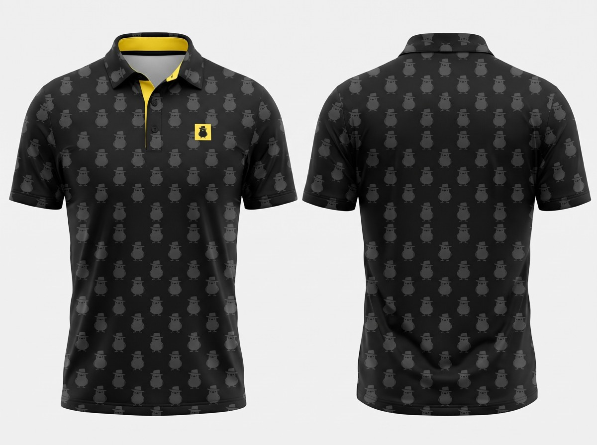

Design notes
All-over small repeat of the fedora bird mascot, each bird about 3 cm tall, about 15 across the chest, evenly spaced on a staggered grid. Tonal and low-contrast: charcoal birds on a black base, so it reads almost solid from a distance. Collar in the same print; underside of the collar and inner placket solid yellow (#feec45). Small 3 x 3 cm yellow square tag printed on the left chest beside the placket, with the black bird mark inside. Black buttons.